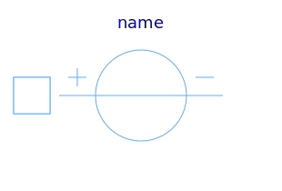
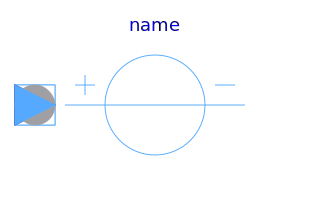
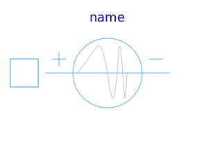
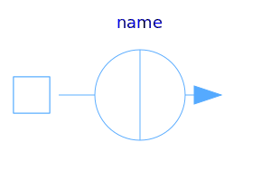
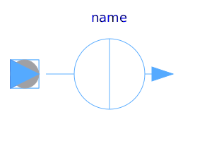
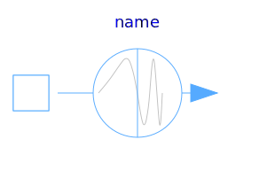

This package hosts sources for quasi stationary single phase circuits. Quasi stationary theory for single phase circuits can be found in the references.
| Name | Description |
|---|---|
|  VoltageSource | Constant AC voltage |
|  VariableVoltageSource | Variable AC voltage |
|  FrequencySweepVoltageSource | Voltage source with integrated frequency sweep |
|  CurrentSource | Constant AC current |
|  VariableCurrentSource | Variable AC current |
|  FrequencySweepCurrentSource | Current source with integrated frequency sweep |